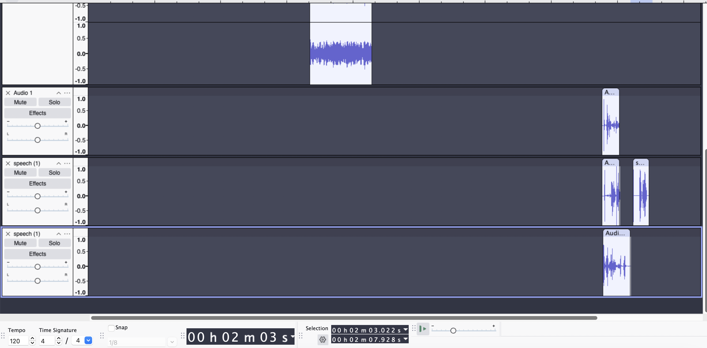
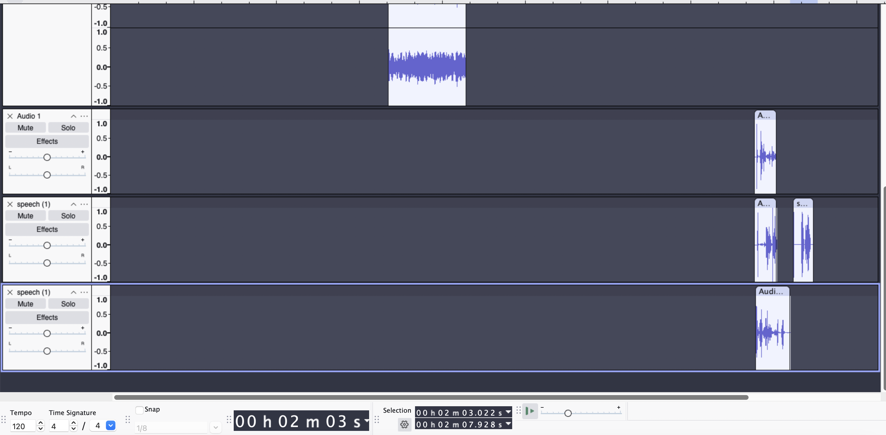

Welcome to PIX 102.3 FM!
Home to music!
It's definitely not going badly today! Nope, all good here!
What I did
I wanted to create a sense of urgency with my project, and I wanted to use sounds that I wouldn’t otherwise be able to use. Thus: I made a clip of a fake radio station having announcements for severe weather, complete with clips from songs, an announcer, and the EAS alarm that you’re not allowed to broadcast over the radio unless it’s an actual emergency.
Originally, I wanted it to have a longer buildup, with more scenes from the radio announcer and a guest speaker, but it took longer than I thought to make even this.
 

This is the final audio file. The top is all the emergency alarms and warnings. The second and third are the song clips (links in sources). The remaining three are my homemade sound effects, shuffling cardboard scraps over my computer’s mic. The low quality of the final audio file was purposeful to have the effect of sounding like a radio broadcast, and to mask the cardboard sounds into being more dramatic (they just sound like water going down a creek at higher quality).